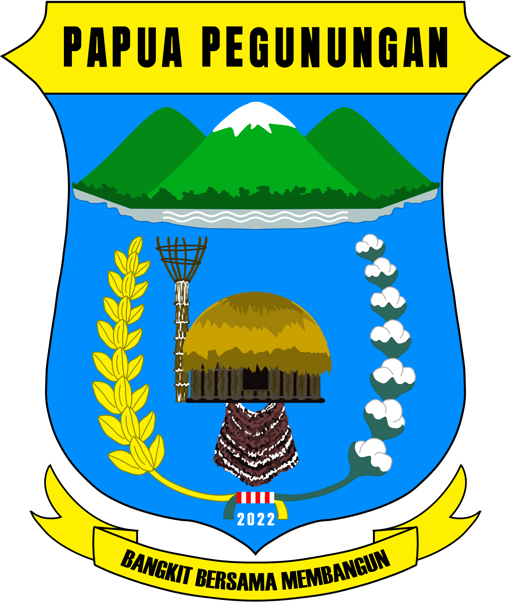

Sistem Informasi &
Basis Data
Beasiswa Provinsi Papua Pegunungan
Tentang
DB BEASISWA adalah sistem informasi dan basis data yang dikelola Dinas Pendidikan Provinsi Papua Pegunungan untuk mencatat, memantau, dan melaporkan penerima beasiswa dari delapan kabupaten, mulai dari pendaftaran, studi aktif, hingga kelulusan.
Seluruh data penerima, perguruan tinggi, dan program beasiswa tersimpan dalam satu basis data resmi provinsi, sehingga status studi dan capaian akademik dapat dipantau secara berkala setiap semester.
Data di portal ini menjadi dasar perencanaan kebijakan pendidikan tinggi sekaligus wujud keterbukaan informasi kepada masyarakat. Statistik ditampilkan secara agregat, sementara data pribadi mahasiswa hanya dapat diakses oleh petugas berwenang.
Kampus tujuan studi
Berita & pengumuman
Semua pengumumanTahapan penerima beasiswa
-
01
Pendaftaran
Calon penerima mengajukan berkas melalui dinas pendidikan kabupaten.
-
02
Seleksi
Verifikasi administrasi dan penilaian akademik oleh tim provinsi.
-
03
Studi aktif
Pelaporan KHS dan status studi setiap semester sebagai syarat pencairan.
-
04
Kelulusan
Alumni tercatat dan kembali membangun Papua Pegunungan.